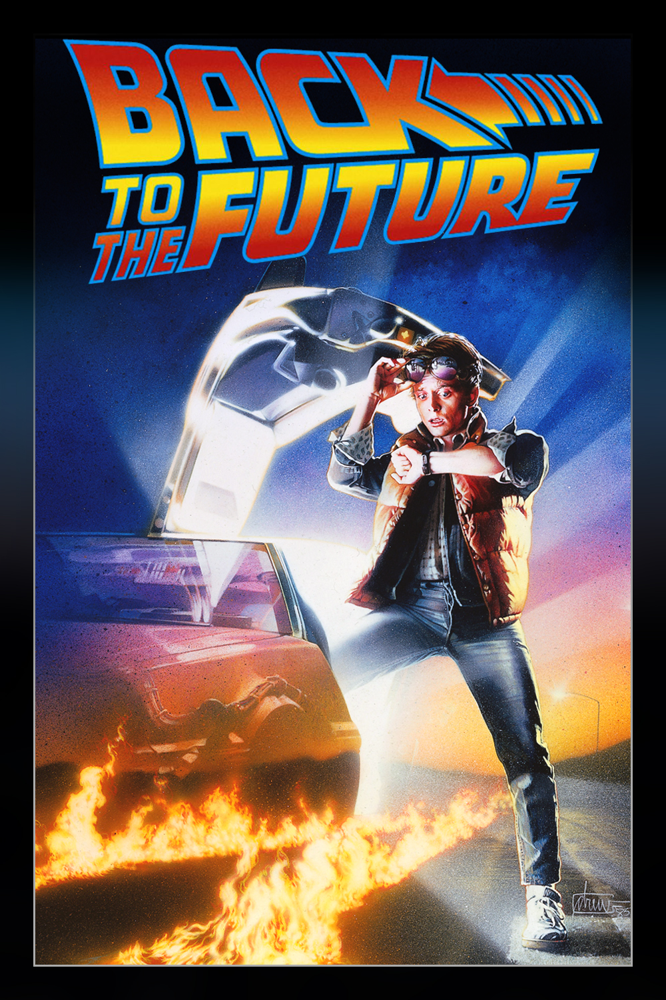

Volver al Futuro es una trilogía y esta dividida entre las siguientes:
Volver al Futuro I
El adolescente Marty McFly es amigo de Doc, un científico que ha construido una máquina del tiempo. Cuando los dos prueban el artefacto, un error fortuito hace que Marty llegue a 1955, año en el que sus padres iban al instituto y todavía no se habían conocido. Después de impedir su primer encuentro, Marty deberá conseguir que se conozcan y se enamoren, de lo contrario su existencia no sería posible.
Volver al Futuro II

Doc Brown lleva a Marty McFly al 2015 para evitar que el futuro hijo de Marty cometa un terrible error que arruinará a su futura familia. Sin embargo, cuando Biff roba el DeLorean para enviar un almanaque deportivo a su pasado, Marty y Doc deben regresar a 1955 para evitar que se forme una versión alternativa de 1985.
Volver al Futuro III

Marty McFly sigue en 1955 y Doc ha retrocedido al año 1885, la época del salvaje oeste. Marty recibe una carta de Doc en la que le informa de que la máquina del tiempo está averiada y no puede volver al presente, pero que no le importa seguir en el pasado. Sin embargo, Marty descubre una tumba en la que lee que Doc murió en 1885 y decide ir a rescatar a su amigo.